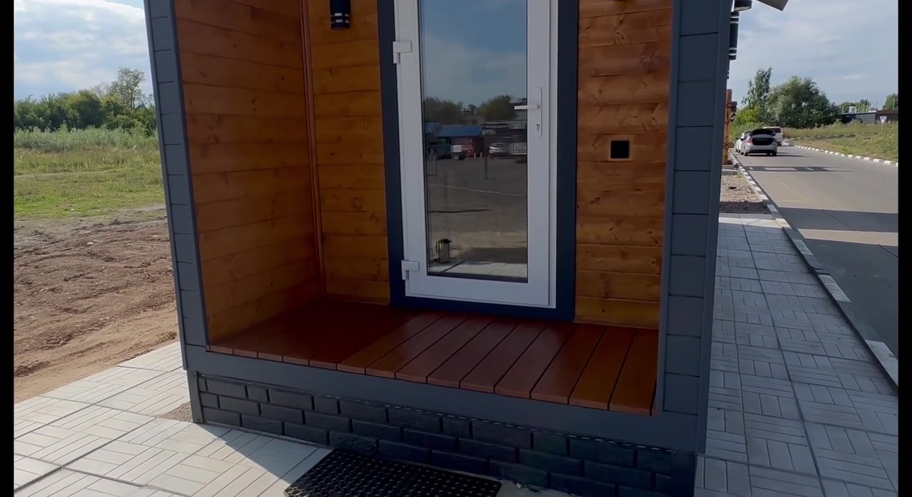
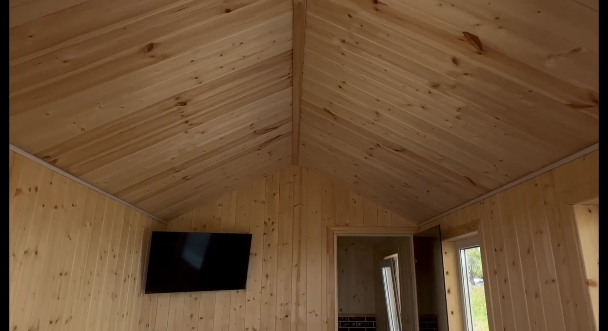
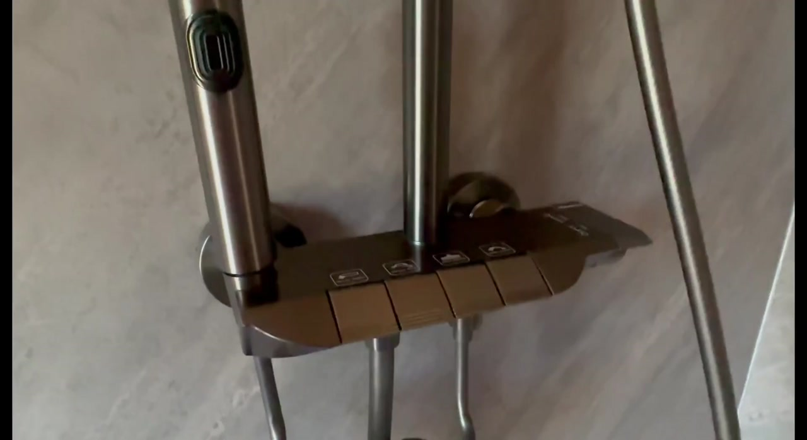
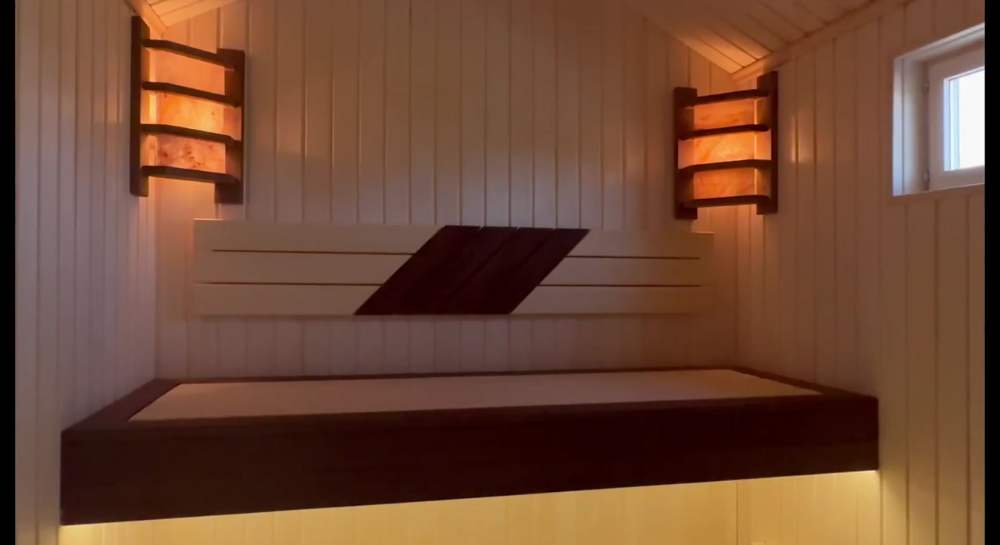

Раменское • производство • доставка по Москве и области
Ваша баня.
Ваше время.
Готовые мобильные бани и индивидуальные проекты. Изготавливаем в цеху, доставляем и устанавливаем на вашем участке.Изготавливаем в цехуКаркас, утепление, отделка, инженерные решения и печной узел собираются в контролируемых условиях.
Доставляем на участокЗаранее проверяем условия подъезда и подбираем способ доставки и разгрузки.
УстанавливаемСтавим баню на согласованное подготовленное основание и передаём готовый объект.
КОЛЛЕКЦИЯ
Найдите баню под ваш сценарий отдыха
Смотреть все 31 модельВНУТРИ БАНИ
Продумано не только снаружи
Баня — это не фасад и не одна красивая парная. Комфорт складывается из планировки, света, вентиляции, печи, пола, слива и десятков небольших решений.Разобрать баню по деталямКрасивую баню видно сразу. Хорошую — нужно посмотреть изнутри.
Мы показываем не только отделку, но и то, что находится за ней. Вы сможете понять назначение каждого слоя и сравнить решения осознанно.
Имитация бруса
Наружная деревянная облицовка. Формирует облик бани; цвет и профиль выбирают для конкретного исполнения. Это отделка, а не вся толщина стены.
Иллюстрация показывает назначение материалов, а не монтажные размеры. Состав и толщины уточняются по модели. Для парной применяется отдельная система пароизоляции и отделки.
Как устроена каркасная баня →КОМПЛЕКТАЦИЯ БЕЗ СЮРПРИЗОВ
Важные решения
видны заранее.
Подробно показываем материалы, печной узел, полы и вентиляцию — без неподтверждённых обещаний.ПОЛЕЗНО ЗНАТЬ
Разбираемся в банях без сложных терминов
Показываем, что находится внутри конструкции, зачем нужен каждый материал и как пользоваться баней после установки. Сначала — простое объяснение. Если хотите глубже — подробная схема и техническая информация.ОТ ИДЕИ ДО УСТАНОВКИ